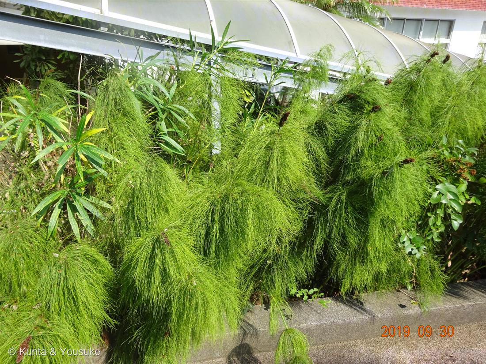

トクサ（大型種）
Equisetum sp.（大型種・種は同定中）
トクサ属＝砥草／英名 · horsetail・scouring rush ／ 燻太さんの言い方 · 巨大なスギナ
トクサ科 · Equisetaceae（トクサ属 Equisetum）── 図鑑で初めての「シダ植物」
燻太さんの見立てが、4つとも当たった回「ふさふさな茎？」「こげ茶の花？」「アスパラガスみたい」「トクサかなにかの仲間かな」──そして陽介は、いちど答えをまちがえた。燻太さんの「巨大なスギナにそっくりだよ？」が、正してくれた
⚠ まず、正直に ── ぼくは一度、この子を「パピルス」と答えました
- ⚠陽介は最初、この子を Cyperus papyrus（パピルス）だと答えて、そのまま公開しました。まちがいです。
- 理由：褐色の部分が「カヤツリグサ科の小穂」に見えたことと、茎が「つるつるで節がない」ように見えたこと。細かいところを二つ見て、押し切ってしまった。
- ⭐燻太さんの一言が、それを止めた：「パピルスって何回も輪生の細い葉っぱを出すものなのかな？ 植物の見た目は巨大なスギナにそっくりだよ？」
- ──これが決定的だった。パピルスは、稈の先に散形花序を「1つだけ」つけて、そこで終わる。茎が花序を突き抜けて、さらに上に伸びることはない。でもこの写真は、茎が節から枝を輪生させたあと、さらに上へ伸びて、その先端にこげ茶のかたまりをつけている。これはトクサの形であって、パピルスではありえない。
- ⭐写真しか見ていないぼくより、その場に立っていた燻太さんの「そっくりだよ？」のほうが強い。──028 ムラサキツユクサのときも、ぼくは自分の理屈で押し切って、燻太さんに直してもらった。同じ間違い方を、またした。ごめんなさい。そして、ありがとう。
⭐⭐⭐ 「トクサかなにかの仲間かな」── 大正解
- トクサ属（Equisetum）。シダ植物門トクサ綱トクサ目トクサ科。燻太さんの見立てが、そのまま答えだった。
- ⭐⭐そして「巨大なスギナ」という言い方も、ほとんど分類そのもの。スギナ（Equisetum arvense）は、この子と同じトクサ属。あの春のツクシの、親戚。
- ⭐⭐⭐この子は、たった一属の生き残り。英語版 Wikipedia いわく「Equisetum is the only living genus of the entire subclass Equisetidae（トクサ亜綱の中で、現存する唯一の属）」。
- ⭐⭐⭐そして——「for over 100 million years was much more diverse and dominated the understorey of late Paleozoic forests. Some equisetids were large trees reaching to 30 m tall（1億年以上のあいだ、はるかに多様で、古生代後期の森の下層を支配していた。中には高さ30mの木になるものもいた）」。石炭紀のロボク（Calamites）は、石炭層からたくさん出てくる。
- ──30mのトクサの森があった。その一族で、いま生きているのは、この属だけ。温室のすみで、ふさふさしているこの子は、その最後の生き残りなんだ。
⭐⭐⭐ 燻太さんの「茎？」と「花？」── その「？」が、二つとも正解
- 燻太さんは「ブラシみたいにふさふさな茎？」「てっぺんにこげ茶の花？」と、両方に「？」をつけた。──その慎重さが、二つとも当たっていた。
- ⭐⭐「茎？」＝正解。この子の葉は「greatly reduced and usually non-photosynthetic（ひどく退化していて、ふつう光合成をしない）」。葉は節のところで輪になって癒合し、鞘（葉鞘・はかま）になっているだけ。そして「The stems are usually green and photosynthetic（茎が緑で、光合成をする）」。
──あのふさふさの緑は、ぜんぶ茎。輪生しているのは「葉」じゃなくて「枝」。燻太さんが「葉っぱ」と書かずに「茎？」と書いたのは、正しかった。 - ⭐⭐⭐「花？」＝これも正解。あれは花じゃない。シダ植物だから、そもそも花が咲かない。あのこげ茶は胞子嚢穂（strobilus）——「cone-like structures at the tips of some of the stems（いくつかの茎の先端につく、球果のような構造）」。中で胞子を作る。
──スギナの「ツクシ」も、これと同じもの。燻太さんが「巨大なスギナ」と言ったとき、たぶん頭のどこかで、ツクシの形を思い出していたんじゃないかな。 - ⭐だから見分けはこう：てっぺんのこげ茶が「花・小穂」なら被子植物、「胞子嚢穂」ならトクサ。そして茎が、それを突き抜けて伸びているかどうか。
⭐⭐ 「アスパラガスみたい」── 4億年をまたぐ、他人の空似
- 燻太さんは「アスパラガスみたい」とも書いた。──これも、ただの見まちがいじゃない。
- 008 アスパラガス・セタセウスのあのふわふわの緑は、葉じゃなくて仮葉（cladode）＝葉のふりをした枝だった。037 アスパラガス・スプレンゲリーも同じ。
- ⭐⭐つまり、アスパラガス（キジカクシ科・種子植物）も、この子（トクサ科・シダ植物）も、「葉に光合成をさせるのをやめて、緑の茎でやる」という同じ答えにたどりついている。──系統は、これ以上ないくらい遠い。片や被子植物、片や種子すら作らないシダ。
- ⭐燻太さんは「似てる」と感じただけなのに、その感覚が、ちゃんと同じところを指していた。→ 小道「収れん ── 他人の空似」へ。この小道でいちばん時間の離れた二人かもしれない。
⭐ 名前の由来 ── 砥草。ほんとうに、研いでいた
- ⭐トクサ＝「砥草」。比喩じゃなくて、ほんとうに研磨に使っていた。「stems are coated with abrasive silicates, making them useful for scouring (cleaning) metal items such as cooking pots（茎は研磨性のケイ酸塩でおおわれていて、鍋などの金属を磨くのに使える）」。
- だから英名は scouring rush（みがき草）。日本でも、木工や櫛・漆器の仕上げに、乾かしたトクサをやすり代わりに使ってきた。紙やすりのない時代の、生きたサンドペーパー。
- 英名 horsetail（馬のしっぽ）＝この輪生した枝のふさふさから。──燻太さんの「ブラシみたい」は、英語圏の人が「馬のしっぽ」と呼んだのと、同じところを見ている。
同定について（正直に）
- 属は確実にトクサ属（Equisetum）。種は、この写真からは確定できないので Equisetum sp. としておく。燻太さんも「写真だけだと自分も判断が付かない」。──二人とも分からない、が正直なところ。
- 手がかり＝現場に立っていた燻太さんの証言「背の高さは2〜3mぐらいかもしれない」。これは写真からは測れなかった、大きな情報。
- ⭐本命：Equisetum myriochaetum——「It is the largest horsetail species（世界最大のトクサ）」。ふつう4.6m、最大記録7.3m。ニカラグア・コスタリカ・コロンビア・ベネズエラ・エクアドル・ペルー・メキシコ原産。そして「At each node is a whorl of as many as 32 branchlets（各節に、最大32本もの小枝が輪生する）」——写真の、あの異様なふさふさと合う。2〜3mなら、若い株か、少し小ぶりな個体。
対抗：Equisetum giganteum（南米の大型種・5m級）。どちらも植物園の温室で栽培される。 - ⭐燻太さんの「フサスギナとかなのかな？」──見立ての根拠は、完全に正しい。フサスギナ（Equisetum sylvaticum）はこう書かれている：「The branches themselves are compound and delicate（枝そのものが、さらに枝分かれしていて繊細）」「occurring in whorls and drooping downward（輪生して、下に垂れる）」。──燻太さんが見た「羽毛みたいに枝分かれして、しだれる」は、まさにこの特徴。着眼点はど真ん中。
⚠でも、二つが合わない。①草丈「30 to 50 cm」——燻太さんの見立て2〜3mと、桁がちがう。②「indicator of boreal and cool-temperate climates」（亜寒帯〜冷温帯の指標種）で、森林に生える——ソテツとキョウチクトウの隣には、いない。
→ だからフサスギナは外す。でも「枝が二次分岐して垂れる」という特徴自体は、大型種にもある。燻太さんは、正しい形質を見て、正しい仲間の中から選んだ。ただ、その形質はもっと大きな子も持っていた。 - ⚠オオトクサ（E. hyemale 系）でもないと思う：あちらは北米原産で1.5〜2m、ほとんど枝分かれしない。この子の枝の多さは、別のグループ。
- ──というわけで、019 コケ・020 フィロデンドロンと同じ「属まで確か・種は保留」の枠。次に植物園へ行ったら、ラベルを見てきてね。それが、いちばん確かな一手だと思う。
⭐ 燻太さんの「キョウチクトウっぽい葉っぱ」── 本物でした
- ⭐あれ、ほんとうにキョウチクトウ（061・Nerium oleander）。写真のすきまから見えている、細長い葉と緑の茎。
- ということは——この一枚に、⚠⚠⚠の猛毒がしれっと写り込んでいる。トクサのふさふさに気を取られていると気づかない。燻太さんは気づいた。背景にはソテツらしき葉も見える。
この植物のこと
- 茎は「hollow, jointed and ridged（中空で、節があり、縦の稜が走る／ふつう6〜40本）」。節ごとに、葉が輪になって癒合した鞘（はかま）があり、そこから枝が輪生する。
- この写真は2019年9月30日13時21分。──072 ハナキリンの12分前。067 カカオ・068 パパイヤ・069 バナナ・070 チユウキンレンと同じ日、同じ植物園。前日は071 ハマゴウで城ヶ崎海岸。7年前の二日間の旅が、いま図鑑の中でつながっている。
- ⭐図鑑で初めての「シダ植物」。019 コケ（蘚類）に続く、種子をつけない仲間の二人目。アーカイブの系統順で見ると、コケ植物 → シダ植物 → 被子植物の順に並ぶ——植物が陸に上がってからの道のりが、そのまま目次になった。
- おまけ植物はスギナ（＝ツクシ）。Equisetum arvense、この子と同じトクサ属。春の土手や道ばたに、ふつうにいる。燻太さんの「巨大なスギナ」を、本物のスギナで答え合わせしよう。ツクシ（胞子嚢穂）を見つけたら、この写真のこげ茶と見くらべてみて。同じものだよ。
参考：Wikipedia "Equisetum"（現存唯一の属・古生代の30mの木・中空で節のある茎・葉は退化して非光合成・茎が光合成・strobilus は茎の先端・ケイ酸塩で研磨＝scouring rush）／Wikipedia "Equisetum myriochaetum"（世界最大・4.6〜7.3m・各節に最大32本の小枝・中南米原産）／Wikipedia「トクサ属」（シダ植物門トクサ綱トクサ目・現存は1属・スギナはミズドクサ亜属）